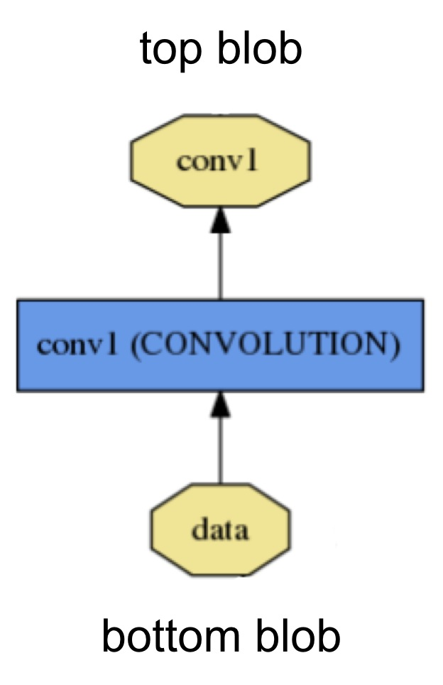

Caffe
Deep learning framework by the BVLC
Created by
Yangqing Jia
Lead Developer
Evan Shelhamer
Blobs, Layers, and Nets: anatomy of a Caffe model
Deep networks are compositional models that are naturally represented as a collection of inter-connected layers that work on chunks of data. Caffe defines a net layer-by-layer in its own model schema. The network defines the entire model bottom-to-top from input data to loss. As data and derivatives flow through the network in the forward and backward passes Caffe stores, communicates, and manipulates the information as blobs: the blob is the standard array and unified memory interface for the framework. The layer comes next as the foundation of both model and computation. The net follows as the collection and connection of layers. The details of blob describe how information is stored and communicated in and across layers and nets.
Solving is configured separately to decouple modeling and optimization.
We will go over the details of these components in more detail.
Blob storage and communication
A Blob is a wrapper over the actual data being processed and passed along by Caffe, and also under the hood provides synchronization capability between the CPU and the GPU. Mathematically, a blob is an N-dimensional array stored in a C-contiguous fashion.
Caffe stores and communicates data using blobs. Blobs provide a unified memory interface holding data; e.g., batches of images, model parameters, and derivatives for optimization.
Blobs conceal the computational and mental overhead of mixed CPU/GPU operation by synchronizing from the CPU host to the GPU device as needed. Memory on the host and device is allocated on demand (lazily) for efficient memory usage.
The conventional blob dimensions for batches of image data are number N x channel K x height H x width W. Blob memory is row-major in layout, so the last / rightmost dimension changes fastest. For example, in a 4D blob, the value at index (n, k, h, w) is physically located at index ((n * K + k) * H + h) * W + w.
- Number / N is the batch size of the data. Batch processing achieves better throughput for communication and device processing. For an ImageNet training batch of 256 images B = 256.
- Channel / K is the feature dimension e.g. for RGB images K = 3.
Note that although many blobs in Caffe examples are 4D with axes for image applications, it is totally valid to use blobs for non-image applications. For example, if you simply need fully-connected networks like the conventional multi-layer perceptron, use 2D blobs (shape (N, D)) and call the InnerProductLayer (which we will cover soon).
Parameter blob dimensions vary according to the type and configuration of the layer. For a convolution layer with 96 filters of 11 x 11 spatial dimension and 3 inputs the blob is 96 x 3 x 11 x 11. For an inner product / fully-connected layer with 1000 output channels and 1024 input channels the parameter blob is 1000 x 1024.
For custom data it may be necessary to hack your own input preparation tool or data layer. However once your data is in your job is done. The modularity of layers accomplishes the rest of the work for you.
Implementation Details
As we are often interested in the values as well as the gradients of the blob, a Blob stores two chunks of memories, data and diff. The former is the normal data that we pass along, and the latter is the gradient computed by the network.
Further, as the actual values could be stored either on the CPU and on the GPU, there are two different ways to access them: the const way, which does not change the values, and the mutable way, which changes the values:
const Dtype* cpu_data() const;
Dtype* mutable_cpu_data();
(similarly for gpu and diff).
The reason for such design is that, a Blob uses a SyncedMem class to synchronize values between the CPU and GPU in order to hide the synchronization details and to minimize data transfer. A rule of thumb is, always use the const call if you do not want to change the values, and never store the pointers in your own object. Every time you work on a blob, call the functions to get the pointers, as the SyncedMem will need this to figure out when to copy data.
In practice when GPUs are present, one loads data from the disk to a blob in CPU code, calls a device kernel to do GPU computation, and ferries the blob off to the next layer, ignoring low-level details while maintaining a high level of performance. As long as all layers have GPU implementations, all the intermediate data and gradients will remain in the GPU.
If you want to check out when a Blob will copy data, here is an illustrative example:
// Assuming that data are on the CPU initially, and we have a blob.
const Dtype* foo;
Dtype* bar;
foo = blob.gpu_data(); // data copied cpu->gpu.
foo = blob.cpu_data(); // no data copied since both have up-to-date contents.
bar = blob.mutable_gpu_data(); // no data copied.
// ... some operations ...
bar = blob.mutable_gpu_data(); // no data copied when we are still on GPU.
foo = blob.cpu_data(); // data copied gpu->cpu, since the gpu side has modified the data
foo = blob.gpu_data(); // no data copied since both have up-to-date contents
bar = blob.mutable_cpu_data(); // still no data copied.
bar = blob.mutable_gpu_data(); // data copied cpu->gpu.
bar = blob.mutable_cpu_data(); // data copied gpu->cpu.
Layer computation and connections
The layer is the essence of a model and the fundamental unit of computation. Layers convolve filters, pool, take inner products, apply nonlinearities like rectified-linear and sigmoid and other elementwise transformations, normalize, load data, and compute losses like softmax and hinge. See the layer catalogue for all operations. Most of the types needed for state-of-the-art deep learning tasks are there.

A layer takes input through bottom connections and makes output through top connections.
Each layer type defines three critical computations: setup, forward, and backward.
- Setup: initialize the layer and its connections once at model initialization.
- Forward: given input from bottom compute the output and send to the top.
- Backward: given the gradient w.r.t. the top output compute the gradient w.r.t. to the input and send to the bottom. A layer with parameters computes the gradient w.r.t. to its parameters and stores it internally.
More specifically, there will be two Forward and Backward functions implemented, one for CPU and one for GPU. If you do not implement a GPU version, the layer will fall back to the CPU functions as a backup option. This may come handy if you would like to do quick experiments, although it may come with additional data transfer cost (its inputs will be copied from GPU to CPU, and its outputs will be copied back from CPU to GPU).
Layers have two key responsibilities for the operation of the network as a whole: a forward pass that takes the inputs and produces the outputs, and a backward pass that takes the gradient with respect to the output, and computes the gradients with respect to the parameters and to the inputs, which are in turn back-propagated to earlier layers. These passes are simply the composition of each layer’s forward and backward.
Developing custom layers requires minimal effort by the compositionality of the network and modularity of the code. Define the setup, forward, and backward for the layer and it is ready for inclusion in a net.
Net definition and operation
The net jointly defines a function and its gradient by composition and auto-differentiation. The composition of every layer’s output computes the function to do a given task, and the composition of every layer’s backward computes the gradient from the loss to learn the task. Caffe models are end-to-end machine learning engines.
The net is a set of layers connected in a computation graph – a directed acyclic graph (DAG) to be exact. Caffe does all the bookkeeping for any DAG of layers to ensure correctness of the forward and backward passes. A typical net begins with a data layer that loads from disk and ends with a loss layer that computes the objective for a task such as classification or reconstruction.
The net is defined as a set of layers and their connections in a plaintext modeling language. A simple logistic regression classifier

is defined by
name: "LogReg"
layer {
name: "mnist"
type: "Data"
top: "data"
top: "label"
data_param {
source: "input_leveldb"
batch_size: 64
}
}
layer {
name: "ip"
type: "InnerProduct"
bottom: "data"
top: "ip"
inner_product_param {
num_output: 2
}
}
layer {
name: "loss"
type: "SoftmaxWithLoss"
bottom: "ip"
bottom: "label"
top: "loss"
}
Model initialization is handled by Net::Init(). The initialization mainly does two things: scaffolding the overall DAG by creating the blobs and layers (for C++ geeks: the network will retain ownership of the blobs and layers during its lifetime), and calls the layers’ SetUp() function. It also does a set of other bookkeeping things, such as validating the correctness of the overall network architecture. Also, during initialization the Net explains its initialization by logging to INFO as it goes:
I0902 22:52:17.931977 2079114000 net.cpp:39] Initializing net from parameters:
name: "LogReg"
[...model prototxt printout...]
# construct the network layer-by-layer
I0902 22:52:17.932152 2079114000 net.cpp:67] Creating Layer mnist
I0902 22:52:17.932165 2079114000 net.cpp:356] mnist -> data
I0902 22:52:17.932188 2079114000 net.cpp:356] mnist -> label
I0902 22:52:17.932200 2079114000 net.cpp:96] Setting up mnist
I0902 22:52:17.935807 2079114000 data_layer.cpp:135] Opening leveldb input_leveldb
I0902 22:52:17.937155 2079114000 data_layer.cpp:195] output data size: 64,1,28,28
I0902 22:52:17.938570 2079114000 net.cpp:103] Top shape: 64 1 28 28 (50176)
I0902 22:52:17.938593 2079114000 net.cpp:103] Top shape: 64 (64)
I0902 22:52:17.938611 2079114000 net.cpp:67] Creating Layer ip
I0902 22:52:17.938617 2079114000 net.cpp:394] ip <- data
I0902 22:52:17.939177 2079114000 net.cpp:356] ip -> ip
I0902 22:52:17.939196 2079114000 net.cpp:96] Setting up ip
I0902 22:52:17.940289 2079114000 net.cpp:103] Top shape: 64 2 (128)
I0902 22:52:17.941270 2079114000 net.cpp:67] Creating Layer loss
I0902 22:52:17.941305 2079114000 net.cpp:394] loss <- ip
I0902 22:52:17.941314 2079114000 net.cpp:394] loss <- label
I0902 22:52:17.941323 2079114000 net.cpp:356] loss -> loss
# set up the loss and configure the backward pass
I0902 22:52:17.941328 2079114000 net.cpp:96] Setting up loss
I0902 22:52:17.941328 2079114000 net.cpp:103] Top shape: (1)
I0902 22:52:17.941329 2079114000 net.cpp:109] with loss weight 1
I0902 22:52:17.941779 2079114000 net.cpp:170] loss needs backward computation.
I0902 22:52:17.941787 2079114000 net.cpp:170] ip needs backward computation.
I0902 22:52:17.941794 2079114000 net.cpp:172] mnist does not need backward computation.
# determine outputs
I0902 22:52:17.941800 2079114000 net.cpp:208] This network produces output loss
# finish initialization and report memory usage
I0902 22:52:17.941810 2079114000 net.cpp:467] Collecting Learning Rate and Weight Decay.
I0902 22:52:17.941818 2079114000 net.cpp:219] Network initialization done.
I0902 22:52:17.941824 2079114000 net.cpp:220] Memory required for data: 201476
Note that the construction of the network is device agnostic - recall our earlier explanation that blobs and layers hide implementation details from the model definition. After construction, the network is run on either CPU or GPU by setting a single switch defined in Caffe::mode() and set by Caffe::set_mode(). Layers come with corresponding CPU and GPU routines that produce identical results (up to numerical errors, and with tests to guard it). The CPU / GPU switch is seamless and independent of the model definition. For research and deployment alike it is best to divide model and implementation.
Model format
The models are defined in plaintext protocol buffer schema (prototxt) while the learned models are serialized as binary protocol buffer (binaryproto) .caffemodel files.
The model format is defined by the protobuf schema in caffe.proto. The source file is mostly self-explanatory so one is encouraged to check it out.
Caffe speaks Google Protocol Buffer for the following strengths: minimal-size binary strings when serialized, efficient serialization, a human-readable text format compatible with the binary version, and efficient interface implementations in multiple languages, most notably C++ and Python. This all contributes to the flexibility and extensibility of modeling in Caffe.